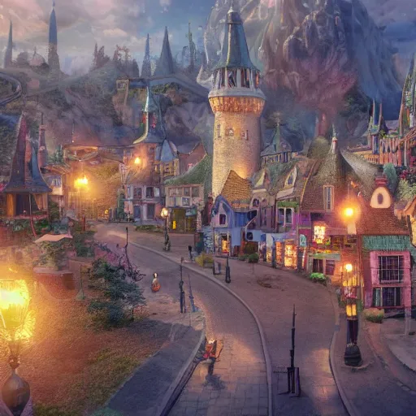
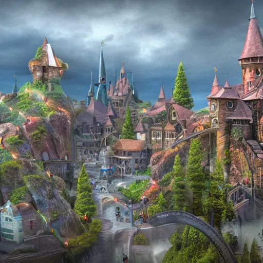

Місто Чарівних Істот
Колись давно, в далекій долині, де ріки змішуються з туманами, а дерева ростуть високо в небо, з’явилося місце, яке привертало найрізноманітніших чарівних істот з усіх куточків світу. За легендою, місто було засноване після Великого Союзу між людьми і магічними істотами, які вирішили жити разом в гармонії.
Місто чарівних істот вражає своєю магічною атмосферою, поєднуючи природну красу з елементами магії. Уздовж вузьких вуличок з бруківкою ростуть високі дерева, їхні гілки переплітаються, створюючи природний навіс над головами мешканців. Промені сонця пробиваються крізь листя, освітлюючи місто м'яким, золотистим світлом.
Жителі міста
Жителі-люди, зокрема маги та чарівники, є важливою частиною спільноти міста чарівних істот. Ці люди присвятили своє життя магічному ремеслу і володіють великою мудрістю та знаннями. Вони займають різні соціальні та магічні позиції: від учнів і молодих магів до досвідчених алхіміків і стародавніх провидців, кожен з яких вносить свій внесок у процвітання міста. Маги носять мантії з вишитими знаками, що символізують їхнє ремесло, і носять на поясі мішечки з чарівним пилом, зіллям та іншими артефактами. У їхніх оселях стіни завішані старовинними сувоями і картинами, які нагадують про значущі події з історії міста. Багато з магів працюють у місцевій школі магії, навчаючи молодих учнів та ділячись древніми знаннями про чаклунство, алхімію, таємниці природи та захисні заклинання. Вони також створюють амулети для захисту жителів від негативних сил, і в моменти небезпеки саме маги стають на першу лінію захисту міста.
Серед чарівних істот, які наповнюють місто, найвидатнішими є величні дракони, які охороняють місто з висоти, граційні феї з крилами, схожими на пелюстки, та грифони — могутні стражі. Дракони, найстарші серед магічних істот, не лише охоронці, а й мудреці, до яких звертаються за порадою навіть досвідчені маги. Вони можуть літати високо в небі, їхні крила створюють вітер, що м'яко проноситься над містом, очищуючи його від негативної енергії. Феї — надзвичайно красиві та доброзичливі істоти, що мешкають у чарівних садах міста. Вони доглядають за рослинами, наповнюючи їх енергією та магією, і кожен захід сонця вони влаштовують танці, на честь яких квіти розцвітають навіть уночі. Їхні крила відблискують перламутром і переливаються в різних кольорах залежно від емоцій та стану природи. Грифони, наполовину орли, наполовину леви, є символом сили та відваги. Їхні гострі кігті та пронизливі очі роблять їх неперевершеними вартовими, які стоять на охороні міських брам і захищають місто від будь-якої загрози. Ці магічні істоти не тільки прикрашають місто своєю присутністю, але й забезпечують спокійне та гармонійне життя для всіх жителів, що живуть поруч, у взаємній повазі та підтримці.